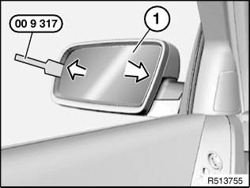
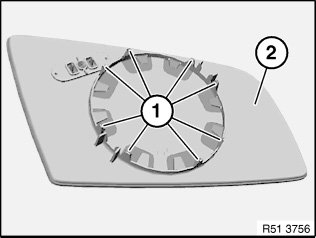

51 16 026 Replacing Mirror Glass
51 16 026 Replacing mirror glass
Special tools required:

WARNING:
- Risk of injury.
- Move mirror glass with hand carefully and slowly.
- If mirror glass is damaged:
- Wear protective goggles and cut-proof gloves.
- Risk of injury by flaking-off glass splinters.

IMPORTANT:
- Risk of damage.
- Bring exterior mirror to room temperature to prevent catches from breaking off.

Graphics are only an example (The graphics used are from E60).

IMPORTANT:
- Risk of damage.
- Secure mirror glass (1) against falling out.
NOTE: Graphics
Press mirror glass (1) on side vehicle by hand to full extent.
Unclip mirror glass (1) all around from outer side with special tool 00 9 317.
Unlock and disconnect associated plug connections, remove mirror glass (1).

Installation:
Retaining lugs (1) must not be damaged.
Fit mirror glass (2) with retaining lugs (1) flush on mirror adjusting drive and clip into place.
Ensure correct locking.
Make sure mirror adjusting drive functions correctly.